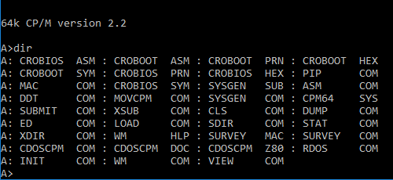

This is an emulator for a CP/M system from the 1970s or early 1980s.
You
can:
– Start an entire computer system with one
double-click.
– Run original software in its original
environment.
– Copy files in and out of the environment
(with the cpmfs tool).
–
Change disks at any point.
Installation is easy. There’s no installer to run, no DLLs to copy to places or register. Just download the ZIP, unZIP it, and double-click “run”. A CP/M computer appears right in front of you.
You can even right-click on run.bat and choose “Send to … Desktop (create shortcut)”. That way you don’t even have to find where you unZIPped it. Just double-click the desktop icon.
You can download a CP/M 2.2 version from:
run-cpm22.zip is configured for 4x 8″ SSSD drives. run-cpm22G2 is configured for 1x 8″ DSDD and up to three of any combination of 8″ SSSD, 5″ SSSD or 8″ DSDD. The second one is better if you need more storage or if you need to transfer files between disk types.
You can download a CP/M 1.4 version from cpm/z80sim/run-cpm14.zip.